工具：jupyter notebook
jupyter 一些快捷键
shift+tab：鼠标选择在函数上，按下shift+tab，多次按下，doc 逐渐展开tab：输入时按下tab可自动补全
数据准备
用下列结构的数据来做演示
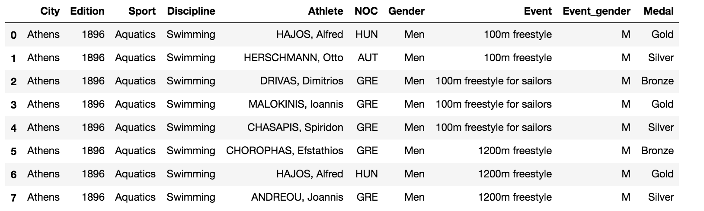
数据读取
1 | import pandas as pd |
1 | In [26]:type(oo) |
Series 与 Dataframe
Dataframe 的每一行和每一列都是一个 Series。
选取前几行
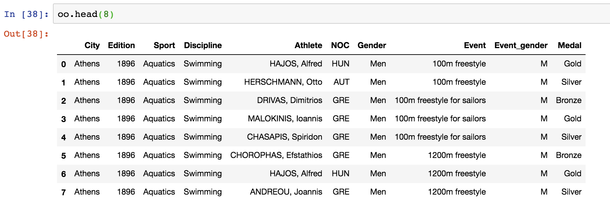
选取单行
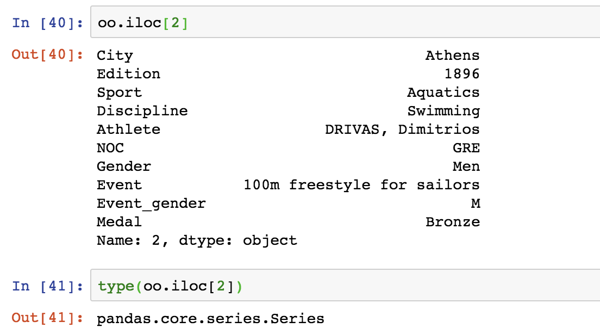
isin
选取单列
方法一：通过中括号选取
方法二：通过点选取
1 | In [43]:oo['City'] |
选取多列
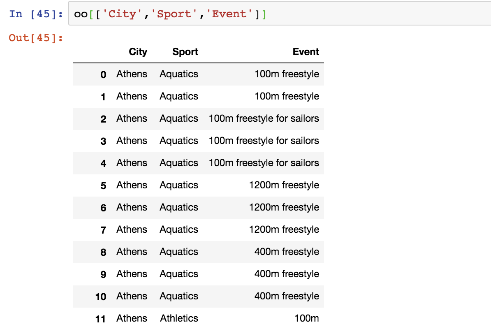
1 | In [44]:type(oo[['City','Sport','Event']]) |
注意：Dataframe 选取的多列后仍是 Dataframe 类型
数据的输入与验证
数据输入
1 | oo = pd.read_csv('./data/olympics.csv',skiprows=4) |
skiprows 表示数据读入时忽略的行数
数据验证
shape 用于返回 Dataframe 的行数和列数
1 | In [48]:oo.shape |
head()和tail()
head(n)和tail(n)分别代表前n行和后n行
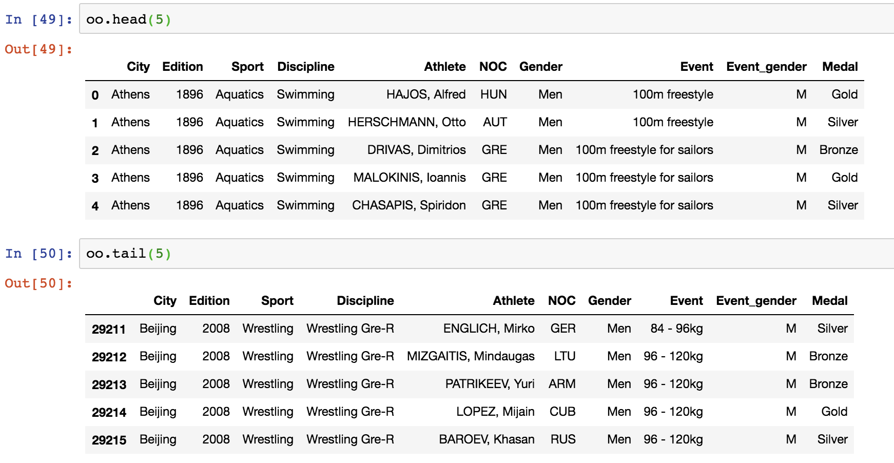
info()
info()方法表示对数据最基本的描述，包括行数、类型、缺失值以及内存占用(memory usage)等。
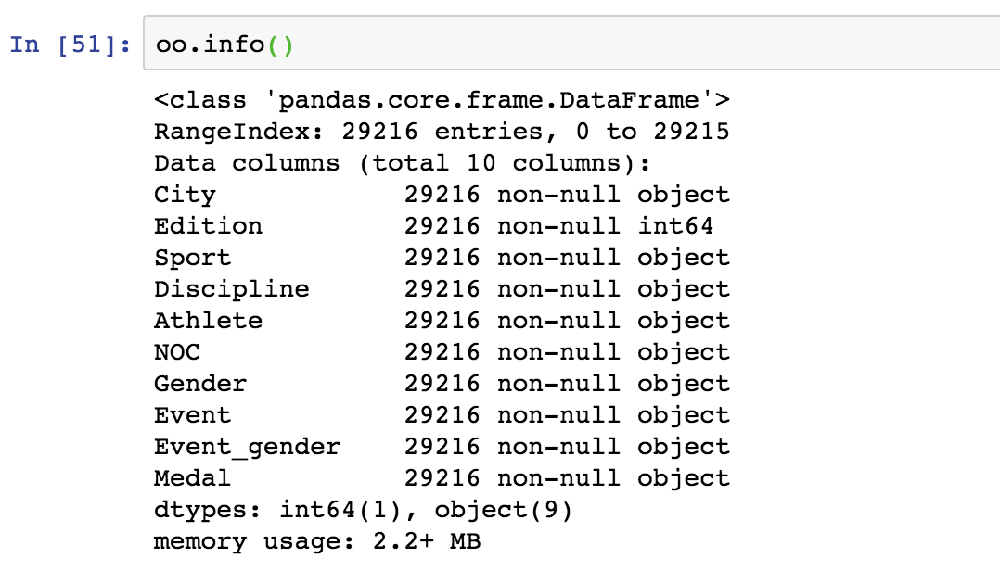
基本数据分析
统计方法 value_counts()
1 | Series.value_counts(normalize=False, sort=True, ascending=False, bins=None, dropna=True)[source] |
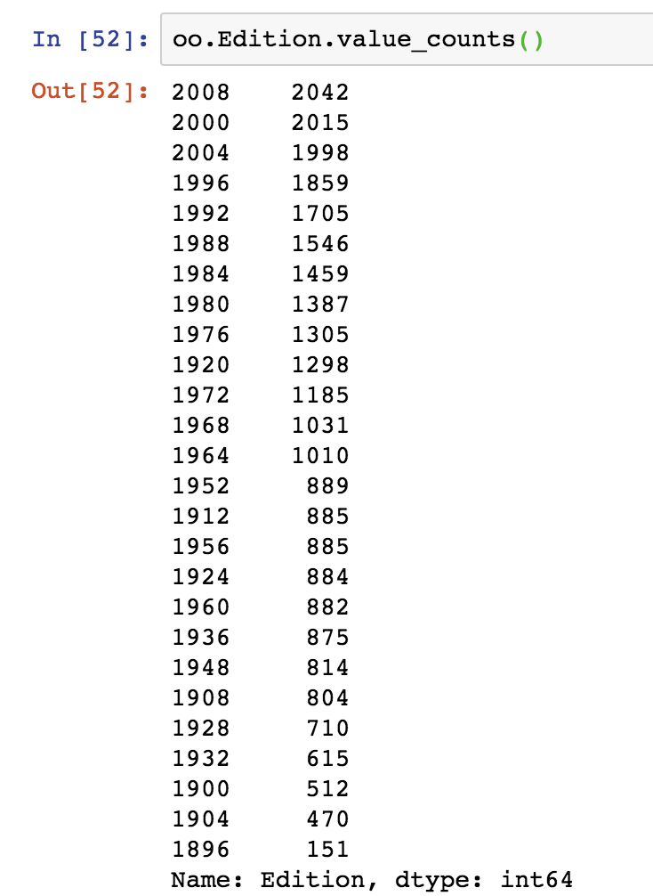
左列代表值，右列代表计数统计。
也可添加参数。
1 | oo.Gender.value_counts(ascending=True,dropna=False) |
排序方法 sort_values()
1 | DataFrame.sort_values(by, axis=0, ascending=True, inplace=False, kind='quicksort', na_position='last') |
其中，
axis：表示索引方向，0-index(行索引)，1-columns(列索引)
ascending
inplace
kind:排序方法
na_position:NA 数据的位置，默认置于最后
例如：Series
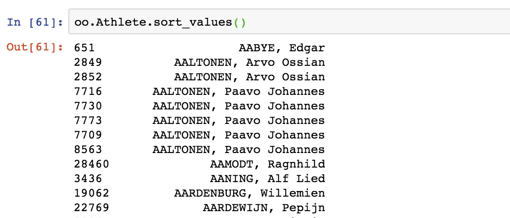
例如：Dataframe
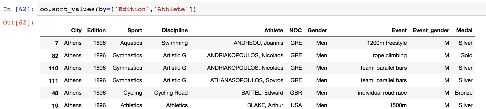
如果多列排序
1 | # 排序方法相同 |
布尔索引快速筛选数据(Boolean Indexing)
布尔索引用于筛选字段为特定值的行
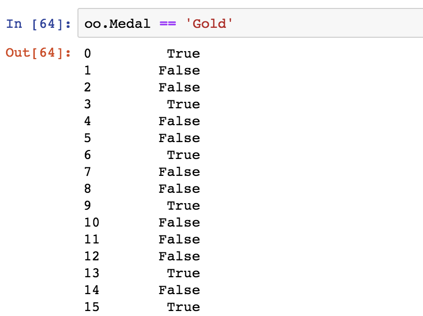
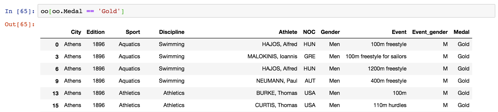
复合条件
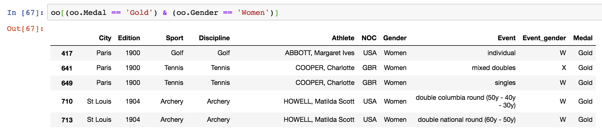
字符串处理——模糊查询(String handling)
str 方法中包含多个方法
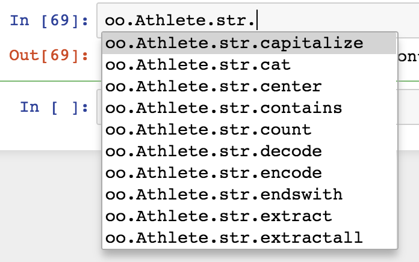
例如：contains() ，返回布尔值
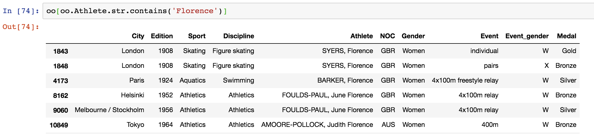
数据索引(Indexing)
索引包括行索引和列索引。
注意：索引不能直接被赋值
1 | In [105]:type(oo.index) |
索引的设置 set_index()
set_index() 用于将 Dataframe 中的某一列作为索引列。
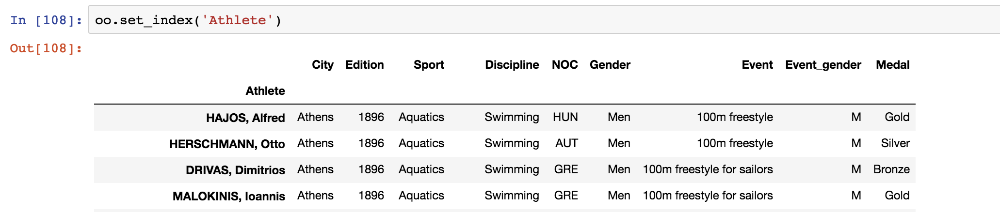
但是通过 oo.set_index('Athlete') 不会修改原 Dataframe，对原表进行修改的方法有以下两种方法：
1 | In [108]:ath = oo.set_index('Athlete') |
索引复位 reset_index()
1 | Signature: set_index(keys, drop=True, append=False, inplace=False, verify_integrity=False) |
有以下两种方法:
1 | In [126]:ath = oo.set_index('Athlete') #设置索引为 Athlete |
索引排序 sort_index()
1 | Signature: sort_index(axis=0, level=None, ascending=True, inplace=False, kind='quicksort', na_position='last', sort_remaining=True, by=None) |
1 | In [138]:ath = oo.set_index('Athlete') |
注意：英文字母比其他种类的文字的优先级低
数据行索引
1 | In [140]:oo.loc[1] # 选取单行 |
loc 只能用于选取索引列，若对非索引列进行选取，需要用？？？，或将其设为索引列。
1 | In [141]:ath = oo.set_index('Athlete') |
注：之所以要使用索引，是因为行索引可方便快速地选取满足多个值的行，而非索引则相对复杂一些。例如：
1 | In [146]:oo.loc[oo.Athlete == ['HERSCHMANN, Otto','HAJOS, Alfred']] #ValueError: Arrays were different lengths: 29216 vs 2 |
iloc 索引
iloc 假设所有数据是以 1,2,3…作为索引的
1 | In [153]:ath.iloc[1] # 单行 |
数据分组
数据分组对象(The groupby object)
1 | In [165]:oo.groupby('Edition') |
可以将 GroupBy 对象转化为 list，list 中每一项为一个元组。元组的第一个元素为分组条件的值，第二个元素为 Dataframe，即相应的数据：
1 | In [168]:list(oo.groupby('Edition')) |
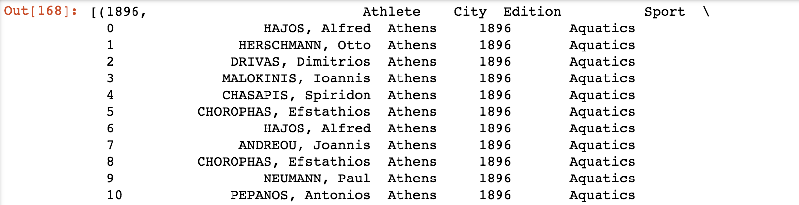
遍历分组对象(Iterating through groups)
可通过类似字典的 (key, value) 方式对分组对象进行遍历：
1 | In [169]:for key, value in oo.groupby('Edition'): |
结果与上述list方法得到的结果相同。下面我们验证得到的元组中，第二个元素为Dataframe类型
1 | In [170]:type(value) |
分组数据常用操作
1 | # 计数 |
数据重塑
stack 和 unstack
1 | Signature: df.stack(level=-1, dropna=True) |
stack:行变成列，数据集中化
unstack:列变成行，数据扁平化
1 | In [235]:mw = oo[(oo.Edition == 2008) & ((oo.Event == '100m')|(oo.Event == '200m'))] |
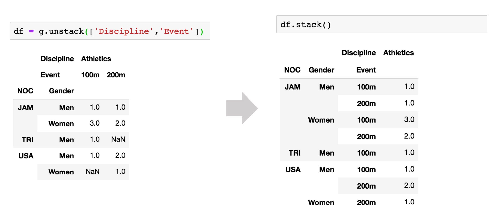
多表操作
批量处理(apply函数)
apply 用于做批量处理
1 | # 将 Athlete 列批量转化为小写 |
合并(concat,merge)
1 | pandas.concat(objs, axis=0, join='outer', join_axes=None, ignore_index=False, keys=None, levels=None, names=None, verify_integrity=False, sort=None, copy=True) |
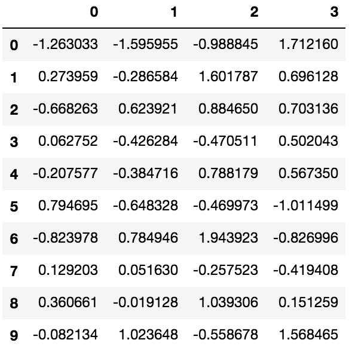
1 | # 行合并 |
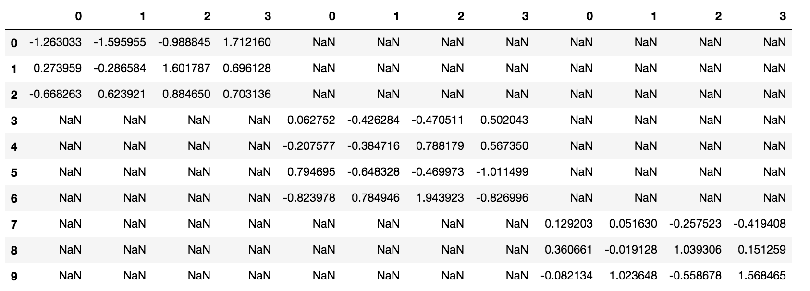
1 | DataFrame.merge(right, how='inner', on=None, left_on=None, right_on=None, left_index=False, right_index=False, sort=False, suffixes=('_x', '_y'), copy=True, indicator=False, validate=None) |